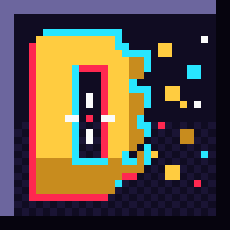

Depixelated
Depixelated est un jeu de tir et de mouvement frénétique en rendu rétro 2.5D, fusionnant des décors 3D low-poly texturés en pixels, du billboarding 2D pur (sprites plats orientés caméra) et une interface 100% pixel-art cohérente.
Développé en Rust sous le moteur Bevy Engine, le jeu embarque un contrôleur cinématique ultra-nerveux permettant de surfer sur des rampes inclinées sans friction, d'enchaîner des glissades au sol, de s'hisser sur les corniches et d'exploiter 3 charges de dash directionnel.
Affrontez 24 agents IA dans un Battle Royale sans pitié, dominez en Match à Mort (5v5) et Capture de Drapeau, ou pulvérisez le chrono en solo sur le mode SkySurf au revolver tournoyant !
*Si vous trouvez un ou plusieurs bugs, n'hésitez pas à me les faire remonter sur mon Discord.
Trailer & Gameplay Rétro :
Mécaniques & Spécificités
Zéro friction sur les rampes inclinées de 35° à 70°. Projection vectorielle de la vélocité, air-strafing, glissades avec conservation d'élan et dash à 3 charges.
Décors 3D low-poly texturés en Nearest Neighbor combinés à des sprites 2D plats orientés en continu vers la caméra. Shader WGSL de pixellisation rétro commutable en direct.
Compas défilant à 360° détectant les chevrons de tirs ennemis et les ondes de bruits de pas. Cartouche unifié en bas à gauche regroupant HP, bouclier, dashs et munitions infinies.
Battle Royale à 25 avec zone toxique, Match à Mort par Équipe 5v5 (40 kills), Capture de Drapeau symétrique et parcours de vitesse SkySurf avec chronomètre haute précision.
Hitscan classique, tirs laser à ricochets géométriques muraux, arc à trajectoire en cloche chargée, parade plasma bloquant 100% des tirs et revolver lourd avec tir en éventail.
Code modulaire découpé en plugins Bevy 0.14+ (UiPlugin, MovementPlugin, CombatPlugin, AiPlugin, GameModePlugin, ShaderPlugin, MapPlugin) taillé pour la performance pure.
Changelog :
Version 1.0.0 [Lancement One-Shot]
Nouveautés & Architecture Initiale
- Moteur cinématique vectoriel sur-mesure complet sous Rust 2021 & Bevy Engine.
- 4 modes de jeu opérationnels : Battle Royale (25 combattants avec zone toxique), TDM 5v5, Capture de Drapeau et SkySurf.
- Arsenal complet de 8 armes à distance (hitscan + mécaniques laser/arc/revolver) et 5 armes blanches.
- Système de navigation au compas rétro avec détection spatiale des tirs et des bruits de pas.
- Shader WGSL de pixellisation rétro post-process avec bascule dynamique dans les options.
- Comportement d'IA autonome pour les 24 bots avec simulation des tirs et recherche de couverture.